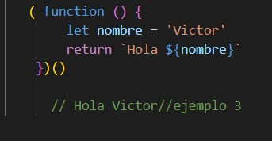
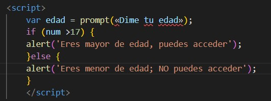
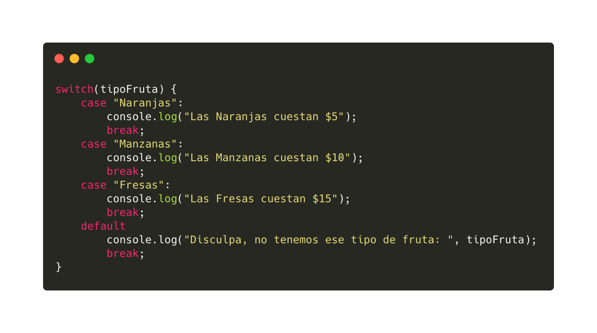
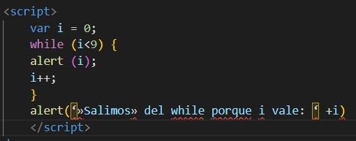
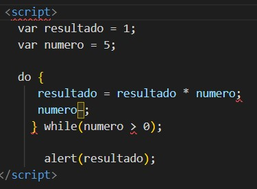
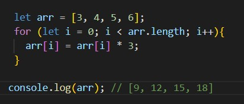
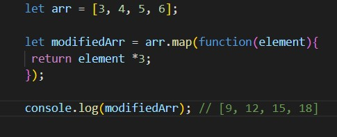

El internet cada dia va evolucionando mas y mas, por lo que JS ha ido evolucionando a lo largo del tiempo surgiendo varias versiones del estandar ECMAScript. Los navegadores pueden ser compatibles con ciertas versiones. A continuación, estas son las versiones de JS que hay en el mercado:
| TABLA DE VERSIONES JAVASCRIPT | ||||
|---|---|---|---|---|
| Version | Año de lanzamiento | |||
| Java version 8 | Marzo del 2014 | |||
| Java version 9 | 21 de septiembre del 2017 | |||
| Java version 10 | 20 de marzo del 2018 | |||
| Java version 11 | 25 de septiembre del 2018 | |||
| Java version 12 | 19 de marzo del 2019 | |||
| Java version ES12 o ECMAScript 2021 | año 2021 | |||
Para incluir codigo JavaScript dentro de una pagina HTML basta con indicarlo de la siguiente manera:

Si no, de otra forma también sería utilizar el código javascript escrito en un archivo separado. Este archivo debe tener la extensión js. En ese archivo JS solo se coloca código javascript. Luego en la página HTML se invoca al JS con la siguiente etiqueta:

Una función es un conjunto de instrucciones que se agrupan para realizar una tarea concreta y que se pueden reutilizar fácilmente. Las funciones en JavaScript se definen mediante la palabra reservada function , seguida del nombre de la función. Su definición formal es la siguiente:

El nombre de la función se utiliza para llamar a esa función cuando sea necesario. El concepto es el mismo que con las variables, a las que se les asigna un nombre único para poder utilizarlas dentro del código. Después del nombre de la función, se incluyen dos paréntesis cuyo significado se detalla más adelante. Por último, los símbolos { y } se utilizan para encerrar todas las instrucciones que pertenecen a la función (de forma similar a como se encierran las instrucciones en las estructuras if o for). Ejemplo:

Podemos declarar una variable de dos formas:
También puedes simplemente asignar un valor a una variable. Por ejemplo, x = 42. Este formulario crea una variable global no declarada. También genera una advertencia estricta de JavaScript. Las variables globales no declaradas a menudo pueden provocar un comportamiento inesperado. Por lo tanto, se desaconseja utilizar variables globales no declaradas.
En javascript existen 7 tipos de datos los cuales son:
Estos tipos se dividen en dos grupos, Primitivos y de Objeto.
Tipos Primitivos
Los valores primitivos son inmutables, no pueden ser cambiados. String, Number, Boolean, null, undefined y Symbol son tipos primitivos. Los tipos primitivos no tienen métodos ni propiedades, aunque en los string, numbers y booleans podemos acceder a ellas grácias a los wrappers objects.
Tipos de Objeto
Un Objeto es un valor en memoria al que podemos acceder por un identificador.En JavaScript los objetos pueden ser vistos como una colección de propiedades. Un Objeto en notación literal tiene este aspecto: var persona = { nombre: "Marcel", edad: "38", ciudad: "Alaior" }; Podemos escribirlo en multiples líneas para más claridad var persona = { nombre: "Marcel", edad: "38", ciudad: "Alaior", };
expresión regular es un patrón que define un conjunto de cadenas sin enumerar todos sus elementos. Una expresión regular está formada de caracteres y metacaracteres que tienen una función definida. La principal utilidad de las expresiones regulares es la de describir un conjunto de cadenas, lo que resulta de utilidad en editores de texto y aplicaciones para buscar y manipular texto. En JavaScript existen dos formas de definir una expresión regular: mediante una cadena literal y mediante el constructor de objeto RegExp. Una expresión regular se puede aplicar a diferentes cadenas mediante expReg.test(cadena), que devuelve true si cadena cumple expReg y false en caso contrario.
En Javascript las funciones son un objeto. Por ello se les puede asignar variables, arrays u otros objetos. La forma en la cual hallamos definido nuestra función, definirá el comportamiento de la misma. Siendo los tipos de función que podemos crear en Javascript los siguientes:
Function declaration
Este tipo de función se creará con la palabra reservada function, seguido obligatoriamente por un nombre, que identificará a nuestra función, una lista de parámetros entre paréntesis, y el símbolo de las llaves {}. Qué será el que delimite el contenido de nuestro conjunto de sentencias. La lista de parámetros cuando creamos una función no es obligatoria, podemos definir una función sin parámetros.
La única diferencia es que la definición de nuestra nueva función no comienza por instrucción function y el nombre de la función es opcional. Este tipo de funciones las podemos almacenar en una variable.
Este tipo de funciones se ejecutan inmediatamente y no son accesibles posteriormente. Para crear una función de este tipo deberemos crearla en un operador de agrupación (). Seguido de (), lo que posibilitará el interpretado directamente en el motor de JavaScript.
Al definir nuestra función dentro de un operador de agrupación no permitimos acceder a variables fuera del IIFE, así como no "contaminar" el scope global.
Esta forma de crear las funciones puede ser utilizado como método en la declaración de un objeto o en las clases de ES6. Para crear este tipo de función debemos asignar un nombre de función seguido de una lista de parámetros entre paréntesis y los símbolos de llaves para delimitar el cuerpo de las instrucciones.
Arrow function.
JavaScript cuenta con los siguientes tipos de operadores:
Un operador de asignación asigna un valor a su operando izquierdo basándose en el valor de su operando derecho. El operador de asignación simple es igual (=), que asigna el valor de su operando derecho a su operando izquierdo. Es decir, x = y asigna el valor de y a x.
Para asignaciones más complejas, la sintaxis de asignación de desestructuración es una expresión de JavaScript que hace posible extraer datos de arreglos u objetos usando una sintaxis que refleja la construcción de arreglos y objetos literales. Como por ejemplo:
Un operador de comparación compara sus operandos y devuelve un valor lógico en función de si la comparación es verdadera (true) o falsa (false). Los operandos pueden ser valores numéricos, de cadena, lógicos u objetos. Las cadenas se comparan según el orden lexicográfico estándar, utilizando valores Unicode. En la mayoría de los casos, si los dos operandos no son del mismo tipo, JavaScript intenta convertirlos a un tipo apropiado para la comparación. Este comportamiento generalmente resulta en comparar los operandos numéricamente.
Un operador aritmético toma valores numéricos (ya sean literales o variables) como sus operandos y devuelve un solo valor numérico. Los operadores aritméticos estándar son suma (+), resta (-), multiplicación (*) y división (/).
Un operador bit a bit trata a sus operandos como un conjunto de 32 bits (ceros y unos), en lugar de números decimales, hexadecimales u octales. Por ejemplo, el número decimal nueve tiene una representación binaria de 1001. Los operadores bit a bit realizan sus operaciones en tales representaciones binarias, pero devuelven valores numéricos estándar de JavaScript.
Los operadores de desplazamiento bit a bit toman dos operandos: el primero es una cantidad que se va a desplazar y el segundo especifica el número de posiciones de bit por las que se va a desplazar el primer operando. La dirección de la operación de desplazamiento es controlada por el operador utilizado.
Los operadores lógicos se utilizan normalmente con valores booleanos (lógicos); cuando lo son, devuelven un valor booleano. Sin embargo, los operadores && y || en realidad devuelven el valor de uno de los operandos especificados, por lo que si estos operadores se utilizan con valores no booleanos, pueden devolver un valor no booleano.
Además de los operadores de comparación, que se pueden usar en valores de cadena, el operador de concatenación (+) concatena dos valores de cadena, devolviendo otra cadena que es la unión de los dos operandos de cadena.
por ejemplo:console.log('mi ' + 'cadena'); // la consola registra la cadena "mi cadena".
El operador de asignación abreviada += también se puede utilizar para concatenar cadenas.
El operador coma (,) simplemente evalúa ambos operandos y devuelve el valor del último operando. Este operador se utiliza principalmente dentro de un bucle for, para permitir que se actualicen múltiples variables cada vez a través del bucle. Se considera de mal estilo usarlo en otros lugares, cuando no es necesario. A menudo, en su lugar pueden y se deben utilizar dos declaraciones independientes.
Un operador relacional compara sus operandos y devuelve un valor Boolean basado en si la comparación es verdadera.
La mayoría de las veces, los operadores y funciones convierten automáticamente los valores que se les pasan al tipo correcto. Esto es llamado “conversión de tipo”. Por ejemplo, alert convierte automáticamente cualquier valor a string para mostrarlo. Las operaciones matemáticas convierten los valores a números. Las tres conversiones de tipo más usadas son a string, a número y a boolean.
Las estructuras de control en javascript y en la mayoría de los lenguajes de programación se utilizan en los para definir el flujo de instrucciones que se van ejecutando. Si no fuera por las estructuras de control lo único que podríamos hacer es ejecutar una instrucción tras otra y no tendriamos forma de aplicar unas funciones u otras en según las condiciones que nosotros queramos establecer.
En javascript disponemos de 2 tipos de estructuras de control:
Dentro de la estructura condicionales pertenecen el if-else y el switch
el «If» es una sentencia que significa “si condicional”. La idea es que si sucede tal cosa, (si la condición es verdadera) se debe ejecutar la sentencia que le sigue, es decir la misma sólo se ejecutaría en caso de que la expresión de tipo Boolean sea verdadera. Si es falsa, el interprete pasará a la parte «else» que significa «sino»; y ejecutará las instrucciones que existen dicha parte. por ejemplo:
El switch se utiliza para hacer diferentes acciones basadas en diferentes condiciones. Consiste en darle un valor y comprobar si ese valor coincide con algún caso. En el caso que coincida, ejecutamos un bloque de código específico. por ejemplo:
Dentro de la estructura de repetición pertenecen el while, do while, for.
El while Permite ejecutar un bloque de código mientras se cumpla una condición que indicamos entre paréntesis. Una característica a tener muy en cuenta a la hora de decidirse a utilizar este tipo de bucles es que la condición es lo primero que se evalúa.En el siguiente ejemplo vamos a mostrar los números del 1 al 9 haciendo uso del bucle WHILE:
El Do While Tiene como diferencia sobre el bucle while, que obligatoriamente siempre se ejecuta 1 vez, luego puede ejecutarse más de una vez, si se dan las condiciones.En este caso la condición se comprueba al final.Vamos a ver un ejemplo de cómo podemos calcular el factorial de un número con el uso de este bucle:
El for son bucles son muy utilizados para recorrer listas de objetos. Si nosotros tenemos una lista de 10 variables y queremos hacer algo sobre cada una de las variables podemos hacer un bucle for que hará las 10 iteraciones que necesitamos.
El modelo de objeto de documento (DOM) es una interfaz de programación para los documentos HTML y XML. Facilita una representación estructurada del documento y define de qué manera los programas pueden acceder, al fin de modificar, tanto su estructura, estilo y contenido. Para crear el DOM, el navegador web que lee el archivo HTML toma todas sus partes, desde el elemento raíz hasta las etiquetas más pequeñas, y las devuelve como un objeto que el JavaScript comprende.
En Javascript, la forma de acceder al DOM es a través de un objeto llamado document, que representa el árbol DOM de la página o pestaña del navegador donde nos encontramos. En su interior pueden existir varios tipos de elementos, pero principalmente serán o :
Todos los elementos HTML, dependiendo del elemento que sean, tendrán un tipo de dato específico.
El método Array.map() te permite iterar sobre un arreglo y modificar sus elementos utilizando una función callback. La función callback se ejecutará entonces en cada uno de los elementos del arreglo. tambien se podria decir que el método map() crea un nuevo array con los resultados de la llamada a la función indicada aplicados a cada uno de sus elementos. Por ejemplo, supongamos que tenemos el siguiente elemento de arreglo:
let arr = [3, 4, 5, 6];
Ahora imagina que tenes que multiplicar cada uno de los elementos del arreglo por 3. Podrías considerar usar un bucle for como el siguiente:
Pero en realidad puedes utilizar el método Array.map() para conseguir el mismo resultado. He aquí un ejemplo:
El método Array.map() se utiliza comúnmente para aplicar algunos cambios a los elementos, ya sea multiplicando por un número específico como en el código anterior, o haciendo cualquier otra operación que pueda necesitar para su aplicación.